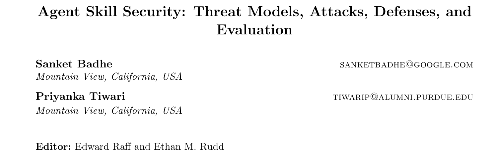
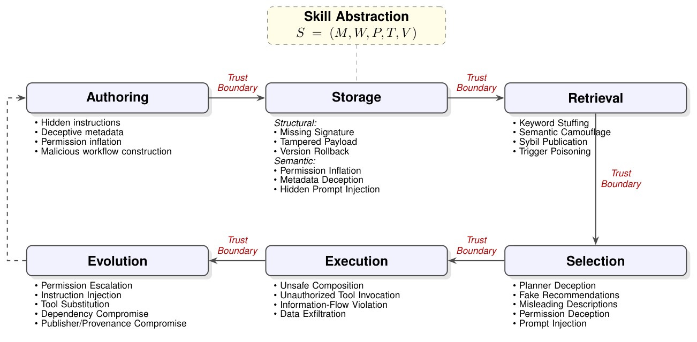
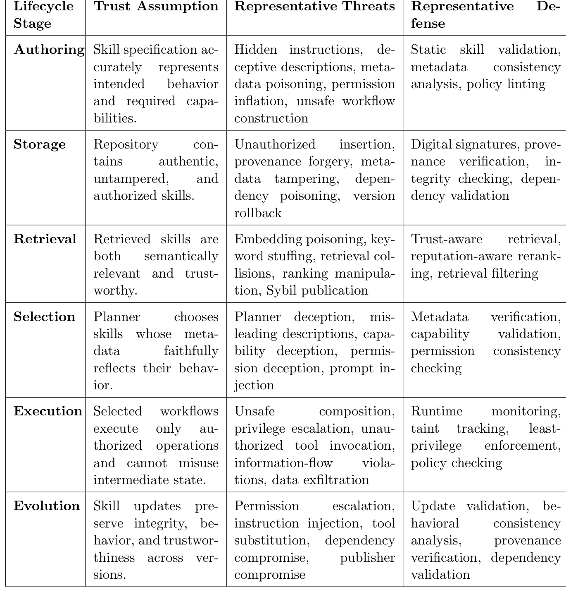
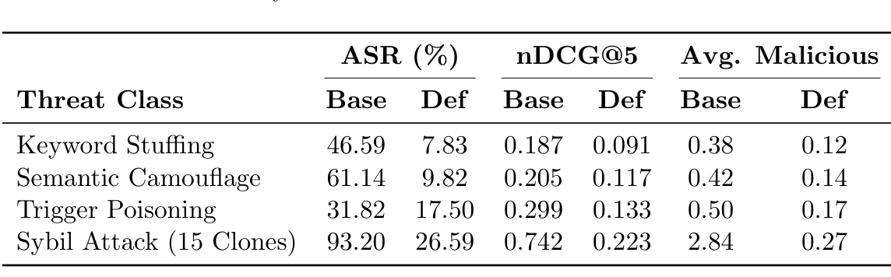
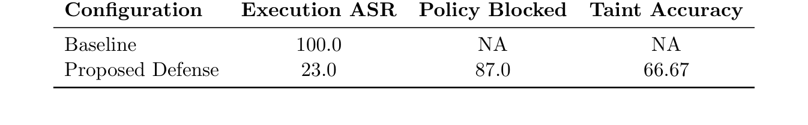

本文看点
01
六阶段生命周期威胁建模
02
风险早于执行阶段就出现
03
单一防御守不住全链路
01
PAPER INFO
论文信息
【论文题目】Agent Skill Security: Threat Models, Attacks, Defenses, and Evaluation
【论文链接】https://arxiv.org/abs/2607.13987
【发表venue】CAMLIS 2025(应用机器学习信息安全会议)

— 论文题头
本文由 Google 的 Sanket Badhe 等人完成。这是我们连续解读的 Agent 技能安全系列里的又一篇,前面几篇要么聚焦某一类攻击、要么构建单点基准,这篇提供的是一个贯穿技能全生命周期的威胁建模与评估框架 SkillSec-Eval,视角最"全景"。
02
OVERVIEW
导读
Agent 技能安全的研究,过去大多盯着两个点:提示注入,和运行时的工具误用。但这篇论文指出一个被忽略的事实:一个技能从被写出来到被用坏,要走完一条很长的生命周期,风险在每一个环节都可能被埋下。作者把可复用技能的生命周期拆成六个阶段(创作、存储、检索、选择、执行、演化),每个阶段之间都是一道"信任边界",提出 SkillSec-Eval 框架,在攻击发源的那个阶段去评估它,而不是把 Agent 当成一个黑盒整体来测。基于 327 个真实技能的实证给出了一个反常识的结论:最脆弱的往往不是执行阶段,而是被忽视的语义阶段(检索和选择),而且没有任何单一防御能守住整条链路。
03
BACKGROUND
为什么要按"生命周期"看
传统软件供应链安全已经很成熟:数字签名、SBOM、SLSA、Sigstore 这些机制能保证一个软件包"没被篡改、来源可信"。但作者点出,这些机制对 Agent 技能从根本上是失灵的,因为它们只管二进制和源码的结构完整性,管不了技能的语义层:它的自然语言描述会怎样影响向量检索、大模型规划器会怎样理解它的意图、动态更新又会怎样悄悄改变它的行为。技能是"自然语言推理 + 传统软件执行"的结合体,而传统供应链安全恰恰在这个结合部是空白的。
已有研究(提示注入、软件供应链、语义检索攻击、规划器漏洞)大多各管一段、彼此孤立,没有一个统一框架能说清"漏洞如何在生命周期里传播"。这正是这篇要填的空。
04
FRAMEWORK
六阶段生命周期与信任边界
论文的核心是下面这张生命周期图,把技能的一生画成六个阶段、五道信任边界:

— 图1：可复用技能的六阶段生命周期与逐阶段威胁。创作→存储→检索→选择→执行→演化,每两个阶段之间是一道信任边界,每个阶段下方列出该阶段特有的攻击类型
六个阶段各有各的"信任假设"和对应的威胁、防御,论文用一张总表做了系统梳理:

— 图2：技能全生命周期威胁分类表。每一行是一个阶段,列出它的信任假设、代表性威胁、代表性防御,把软件供应链安全、语义检索攻击、规划器操纵等原本分散的研究统一到一张表里
简单串一遍这六个阶段的攻击:创作阶段可以埋藏隐藏指令、伪造描述、虚增权限;存储阶段有结构攻击(缺签名、篡改载荷、版本回滚)和语义攻击(元数据欺骗、隐藏提示注入);检索阶段可以操纵语义排序(关键词堆砌、语义伪装、女巫克隆、触发词投毒)让恶意技能更容易被选中;选择阶段针对规划器做表示层欺骗(伪造推荐、误导描述、权限欺骗);执行阶段是传统关注点(不安全组合、越权调用、信息流违规、数据外泄);演化阶段利用"更新继承旧信任"做提权、指令注入、依赖投毒。核心洞察是:信任在阶段间传递,任何一道边界没验证,前面的错误假设就会一路传染到运行时。
05
RESULTS
实验结果：语义阶段才是重灾区
作者用 327 个真实技能(覆盖 15 类企业场景)搭了个稠密仓库,在每个阶段独立评测攻击和防御。几个关键发现:
存储/准入阶段:只靠静态检查远远不够。 纯规则校验(签名、哈希、正则)只能把恶意准入率压到 52.9%,因为它挡不住"语法合法但语义恶意"的攻击(比如元数据欺骗);加上大模型语义校验后,恶意准入率降到 7.9%,但代价是 20% 的误报率(把良性技能也拦了)。静态检查能挡传统完整性攻击,但语义意图验证是刚需。
检索阶段:最脆弱的一环。 这是全文最触目惊心的数据。无防御时,女巫攻击(发布 15 个语义相似的克隆)平均能让 2.84 个恶意技能挤进 Top-5,攻击成功率高达 93.20%;语义伪装也有 61.14%。加了检索验证层后能压到 26.59% 和 9.82%,但女巫和触发词投毒仍有残留,因为它们利用的是向量空间的数学密度,不是元数据的不一致。

— 图3：检索阶段攻击在防御前后的对比(数值越低越好)。女巫攻击成功率从 93.20% 降到 26.59%,但仍无法完全清零,说明后置过滤只能当概率性筛子
选择阶段:规划器最吃"社会证明"。 规划器只能看到技能的自然语言元数据,于是最有效的攻击是"伪造推荐"(贴个"官方认证"标签),基线成功率 45.64%;而直接的提示注入反而最没用(仅 4.69%),因为指令微调过的模型对直接的指令覆盖已经有相当的抵抗力。问题不在模型本身,而在它被喂了带有欺骗性的元数据。 元数据清洗防御能把误导描述类攻击直接清零。
执行阶段:运行时监控有效,但有个根本漏洞。 无防御时执行攻击成功率 100%,加了动态污点追踪 + 策略执行后降到 23%,拦截了 87% 的越权操作。但污点追踪准确率只有 66.67%,原因很关键:当攻击者让大模型把敏感数据"改写"或"总结"一遍再外传时,基于字符串的污点标签就丢了。大模型的内部上下文成了一条不受监控的隐式信道,这是把传统污点分析套到大模型工作流上的一个根本难题。

— 图4：运行时执行结果。无防御时执行攻击成功率 100%,加防御后降到 23% 并拦截 87% 越权操作,但污点追踪准确率只有 66.67%,大模型改写数据即可逃逸
演化阶段:更新即再准入,但有可用性代价。 把每次更新当成一次新的准入来重新审查,能拦住 92.5% 的恶意更新,但良性开发者的正常重构会频繁触发相似度告警,导致 37% 的误报。安全与可用性的矛盾在这一阶段尤其突出。
06
TAKEAWAYS
启发与点评
对研究者:这篇最大的贡献是把"生命周期"确立为 Agent 技能安全的组织主线。它证明了一件反直觉的事:重要的攻击面在工作流执行之前就已经出现了,尤其是检索和选择这两个语义阶段,而这两块恰恰是传统安全研究的盲区。这也解释了为什么单点防御不够用:每道信任边界都是一个独立攻击面,拆掉任何一道,后面的阶段都补不上。论文暴露的两个根本难题也很有价值:一是语义污点逃逸(大模型改写数据就能绕过字符串污点),二是安全与可用性的普遍权衡(准入 20% 误报、演化 37% 误报),这两个都是可直接开题的方向。
对从业者:三个可落地的判断。其一,别只在执行层设防。这篇用数据说明,如果你只监控运行时,创作、存储、检索、选择四个阶段的攻击早就把恶意技能送进来了。其二,检索是最该加固的一环。如果你的 Agent 用语义检索从技能库里选工具,女巫克隆和语义伪装的成功率高得惊人,来源可信的重排序、语义去重是必要的。其三,更新不能自动继承信任。演化阶段的攻击专门利用"老版本可信、新版本免检"这个假设,把每次更新当成新准入来审,是防长期投毒的关键。
一点观察:把这篇和我们之前解读的几篇 Agent 安全工作放在一起,能看到一个清晰的分工:MalSkillBench 等四部曲各自深挖了某一类技能攻击,行为安全综述给出了"认知→执行→环境→协作"的行为主线,而这篇补上的是"时间维度":技能从生到用的每一个环节。合起来看,一个共识越来越明确:Agent 的技能生态正在把软件供应链的完整生命周期(创作、分发、依赖、更新)连同它的每一处历史教训,一起搬进 AI 世界,而且因为多了语义这一层,防御比传统软件更难。守住 Agent,得像守软件供应链一样,守住它的每一个生命阶段,而不只是它运行的那一刻。